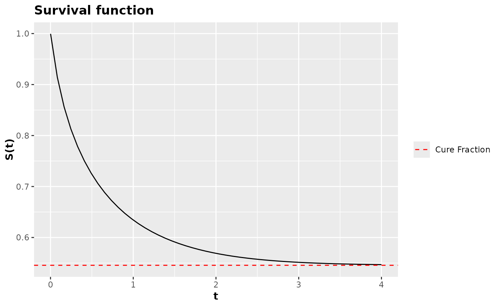

Numerical survival function
survival_function.RdConstructs the numerical survival function from a probability density function.
Details
The function survival_function() returns a function in terms of
\(t\) and the additional parameters of the probability density function
that is passed as an argument to pdf. The returned function calculates
survival numerically, making the implementation of survival functions quick.
The returned function is vectorized in \(t\), that is, a vector of time
instances can be passed as an argument.
The survival function returned by survival_function() also has a t0
argument that defaults to t0 = 0. The t0 argument is the initial
time for the calculation of the survival function. The t0 argument is
useful for calculating the survival function from a start time different
from zero. In most cases, you should not change the default value of t0.
The function returned by survival_function() also has the argument
asymptotic_quantile = 30, which defaults to 30. This argument is responsible
for evaluating the survival function at the 30th quantile, providing a good approximation
for the cure fraction. As this is a numerical evaluation, and depending on the
complexity of the base probability density function, it may be that asymptotic_quantile = 30
produces an error, requiring the value of asymptotic_quantile to be changed.
References
NADARAJAH, Saralees; KOTZ, Samuel. The beta exponential distribution. Reliability engineering & system safety, v. 91, n. 6, p. 689-697, 2006.
Examples
survival_weibull <- survival_function(dweibull)
survival_weibull(0:10, shape = 2, scale = 1, asymptotic_quantile = 30)
#> [1] 1.000000e+00 3.678794e-01 1.831564e-02 1.234098e-04 1.125352e-07
#> [6] 1.392675e-11 0.000000e+00 1.110223e-16 0.000000e+00 5.218048e-15
#> [11] 3.885781e-14
#> attr(,"time")
#> [1] 0 1 2 3 4 5 6 7 8 9 10
#> attr(,"cure_fraction")
#> [1] 0
#> attr(,"class")
#> [1] "survival_function"
# The user can also define any density
# Saraless Nadarajah and Samnuel Kotz (2006)
beta_exponential <- function(x, a, b, lambda){
lambda / beta(a, b) * exp(-b * lambda * x) * (1 - exp(-lambda * x))^(a - 1)
}
survival_beta_exponential <- survival_function(beta_exponential)
survival_beta_exponential(
t = seq(0.01, 1.5, length.out = 20L),
a = 1.5,
b = 1.8,
lambda = 1.5
)
#> [1] 0.99609097 0.91082931 0.79861387 0.68589560 0.58145868 0.48847323
#> [7] 0.40762323 0.33841738 0.27983026 0.23063664 0.18958810 0.15550403
#> [13] 0.12731374 0.10407270 0.08496250 0.06928346 0.05644330 0.04594448
#> [19] 0.03737152 0.03037915
#> attr(,"time")
#> [1] 0.01000000 0.08842105 0.16684211 0.24526316 0.32368421 0.40210526
#> [7] 0.48052632 0.55894737 0.63736842 0.71578947 0.79421053 0.87263158
#> [13] 0.95105263 1.02947368 1.10789474 1.18631579 1.26473684 1.34315789
#> [19] 1.42157895 1.50000000
#> attr(,"cure_fraction")
#> [1] 4.893063e-08
#> attr(,"class")
#> [1] "survival_function"
# Sobrevivencia do modelo de fragilidade descreta ZMPG
fragility_model <- pdf_fragility_zmpg(pdf = dweibull)
fragility_survival <- survival_function(fragility_model)
fragility_survival(
t = seq(0.001, 4, length.out = 50L),
shape = 1.3,
scale = 1.2,
mu = 3.7,
rho = 1.5,
phi = 2.5,
asymptotic_quantile = 30
) |> plot()
